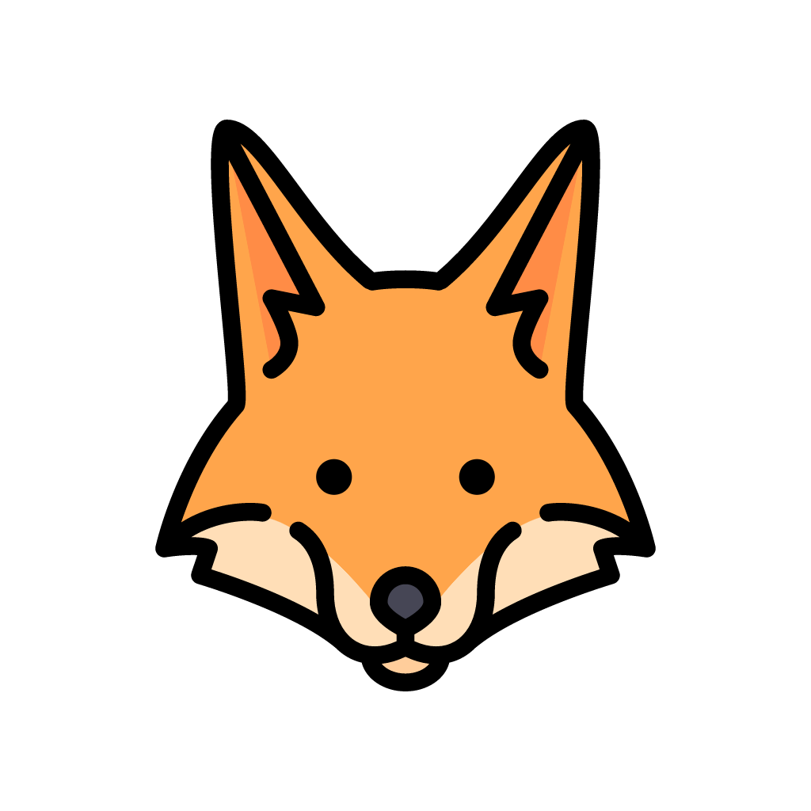

Hola, soy Vicente
Soy una persona apasionada por la tecnología y el aprendizaje constante. Me encanta explorar nuevas formas de expresarme y conectar con los demás a través de mis proyectos.

Soy una persona apasionada por la tecnología y el aprendizaje constante. Me encanta explorar nuevas formas de expresarme y conectar con los demás a través de mis proyectos.
Me fascinan las historias que desafían la realidad. Mis favoritas incluyen:
La música es mi motor diario. Actualmente escucho mucho a:
Creo firmemente en el poder de la colaboración y la curiosidad para cambiar nuestro entorno cercano.
genere una estructura apenas con html sin uso de nigun framework o estilos encrustrados, apenas código html por favor solamente html para hacer una landing page de presentación personal, usando las estiquetas semanticas(header, nav, 3 section con articles, footer) para estructurar los contenidos. Basicamente así Header - nav: 4 links para las 2 sections y el footer - card: con foto y una descripción personal section.uno Un listado de cosas que me gustan hacer section.dos séries, películas, bandas o cantantes, etc, preferidos footer haceme sugenrencia en eque se puede poner acá